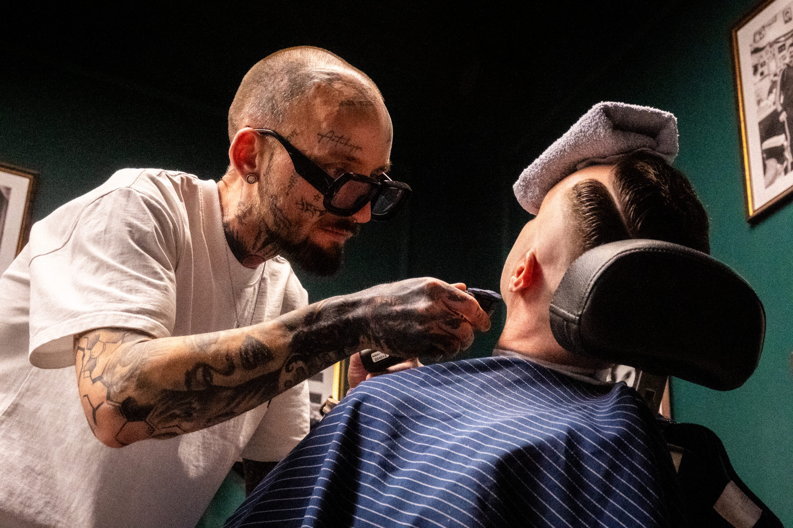
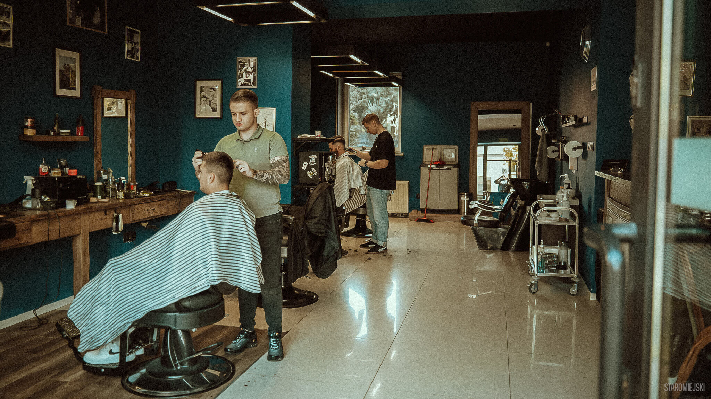

· Est. Radomsko ·
Strzyżenie i golenie wedle sztuki dawnych mistrzów
❦ ✂ ❦

❧ ❦ ❧
Ceny uczciwe, rzemiosło pewne, rezerwacja telefoniczna wielce wskazana.
❧ ✂ ❧

Wierzymy, że strzyżenie to nie usługa, lecz rytuał. Od chwili, gdy klient siada w fotelu, czas płynie wolniej: nożyce mierzą swoje, brzytwa czeka na swoją kolej, a rozmowa toczy się tylko wtedy, gdy jest mile widziana.
Pracujemy na kosmetykach, które szanują skórę, i na technikach, które szanują tradycję. Stare miasto zobowiązuje: tu się nie spieszy, tu się dba o fason.
— Załoga Staromiejskiego
❧ ❦ ❧
„Fason trzyma się tydzień po tygodniu. Mistrzowie brzytwy, polecam każdemu."
„Klimat starego zakładu, robota na najwyższym poziomie. Wracam co miesiąc."
„Golenie brzytwą z gorącym kompresem: ceremonia, nie usługa. Szacunek."
❧ ✂ ❧
Staromiejski Barbershop · Radomsko, Stare Miasto
Pełna oferta: staromiejski.com